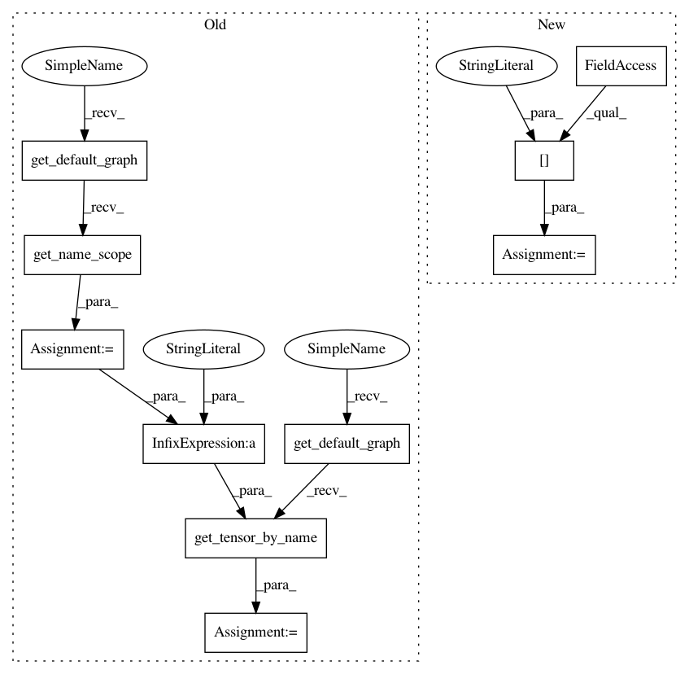

09593fa9ea7fb0df99b27a14eee985320c497ea1,dataset/models/tf/faster_rcnn.py,FasterRCNN,_rpn_head,#Any#Any#Any#,241
Before Change
def _rpn_head(cls, inputs, name="rpn_head", **kwargs):
n_anchors = kwargs["map_shape"][1]
scope_name = tf.get_default_graph().get_name_scope()+"/anchors"
anchors = tf.get_default_graph().get_tensor_by_name(scope_name+"/anchors:0")
anchor_reg = tf.get_default_graph().get_tensor_by_name(scope_name+"/reg:0")
anchor_clsf = tf.get_default_graph().get_tensor_by_name(scope_name+"/clsf:0")
anchor_batch = tf.get_default_graph().get_tensor_by_name(scope_name+"/batch:0")
with tf.variable_scope(name):
rpn_reg = conv_block(inputs, "c", filters=4*9, kernel_size=1, name="conv_reg", **kwargs)
After Change
anchors = self.anchors_placeholders["anchors"]
anchor_reg = self.anchors_placeholders["reg"]
anchor_clsf = self.anchors_placeholders["clsf"]
anchor_batch = self.anchors_placeholders["batch"]
with tf.variable_scope(name):
rpn_reg = conv_block(inputs, "c", filters=4*9, kernel_size=1, name="conv_reg", **kwargs)
In pattern: SUPERPATTERN
Frequency: 3
Non-data size: 10
Instances
Project Name: analysiscenter/batchflow
Commit Name: 09593fa9ea7fb0df99b27a14eee985320c497ea1
Time: 2017-12-05
Author: a.kozhevin@analysiscenter.ru
File Name: dataset/models/tf/faster_rcnn.py
Class Name: FasterRCNN
Method Name: _rpn_head
Project Name: analysiscenter/batchflow
Commit Name: 09593fa9ea7fb0df99b27a14eee985320c497ea1
Time: 2017-12-05
Author: a.kozhevin@analysiscenter.ru
File Name: dataset/models/tf/faster_rcnn.py
Class Name: FasterRCNN
Method Name: _rpn_head
Project Name: analysiscenter/batchflow
Commit Name: 09593fa9ea7fb0df99b27a14eee985320c497ea1
Time: 2017-12-05
Author: a.kozhevin@analysiscenter.ru
File Name: dataset/models/tf/faster_rcnn.py
Class Name: FasterRCNN
Method Name: head
Project Name: analysiscenter/batchflow
Commit Name: 09593fa9ea7fb0df99b27a14eee985320c497ea1
Time: 2017-12-05
Author: a.kozhevin@analysiscenter.ru
File Name: dataset/models/tf/faster_rcnn.py
Class Name: FasterRCNN
Method Name: _rcn_head